Plus de documentation, plus de tutos, plus de waouh !
Bienvenue sur le tutoriel canvas made in Simplon.co !
Vous trouverez dans cette section comment initialiser son canvas, comment s'y repérer, et également, les fonctions primaires nécessaires à une bonne utilisation de ce puissant outil.
À chaque étape, un module de test vous est proposé afin que vous puissiez essayer par vous même votre compréhension ainsi que le rendu des fonctions. Enjoy !
Initialisation du canvas dans la page HTML
Avant toute chose il est nécessaire de créer un espace pour le canvas grace à la balise "canvas" dans notre HTML, et plus précisément, dans la balise "body", à laquelle on attribue une hauteur (height) et une largeur (width):
Il nous faut ensuite charger notre canvas ainsi que les différentes variables nécessaires à son exécution:
La variable feuille correspond à notre canvas, c’est la « feuille » sur laquelle nous allons dessiner.
La variable context nous permet de définir le context dans lequel nous allons dessiner sur notre feuille: 2d ou 3d. Ici nous travaillerons exclusivement en 2d. Selon le context choisi, canvas aura accès à différentes fonctions et méthodes.
La variable input est facultative, elle nous permet d’avoir un espace pour écrire nos fonctions qui seront à interpréter par canvas. Elle doit être liée à une balise "input".
Une fois le canvas initié, nous pouvons plonger dans les méthodes de dessin 2d.
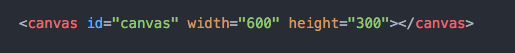
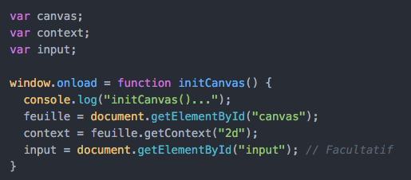
Se repérer dans l'espace canvas
L’espace de dessin de canvas se définit comme un graphique en 2 dimensions ou 2 axes (X et Y), ou encore comme une grille de pixels, quadrillée, dont le point d’origine 0 se situe en haut à gauche et X étant toujours définit en premier lorsque l’on indique des coordonnées.
(exemple: (x = 100, y = 200) donc x = 100 pixels sur la droite et y = 200 pixels vers le bas)
Passons maintenant aux formes de dessin basiques de canvas.
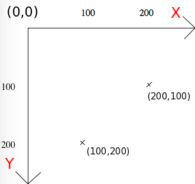
Il existe plusieurs formes géométriques proposées de bases par canvas, le trait, le rectangle et l’arc de cercle. Elles possèdent chacune leurs propres fonctions, méthodes et paramètres à renseigner et doivent être systématiquement appelées à partir de la variable « context » que nous avons définit au préalable.
Les bases du dessins en canvas
Le rectangle
C’est la forme la plus simple d’utilisation. On distingue 2 méthodes: stroke ou fill soit respectivement l’intérieur vide ou l’intérieur plein.
Chaque forme possède ses propres méthodes autour de stroke et fill. Ici nous nous intéresserons principalement à « style » pour donner une couleur à nos traits puis « rect » pour dessiner notre rectangle.
context.strokeStyle ou context.fillStyle, peuvent s’apparenter à une modification des propriétés CSS de notre rectangle, ici la couleur (NB: par défaut la valeur est « black »),
context.strokeRect ou context.fillRect, est la fonction qui effectue le tracé,
le couple (ax, ay) correspond aux coordonnées d’origine du tracé,
le couple (bx, by) correspond aux dimensions du tracé à partir du point d’origine.
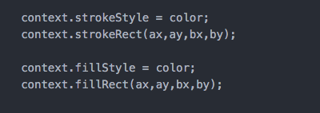
Le trait
Un trait / tracé se déroule en plusieurs étapes:
initialisation, point de départ, point d'arrivée, clôture et affichage du contour et/ou du remplissage.
context.beginPath() et context.closePath() sont obligatoires dans le cas d’un trait, ils annoncent à canvas que nous démarrons puis arrêtons un tracé.
context.moveTo(ax,ay) indique le point de départ du trait aux coordonnées (x,y) renseignées en paramètre.
context.lineTo(bx,by) indique le point d’arrivée du tracé aux coordonnées (x,y) renseignées
context.stroke() est essentiel pour que le tracé ait lieu: c’est en quelque sorte l’encre nécessaire pour dessiner.
NB: Au premier passage du Try it, les traits rouge, vert et bleu sont fins, mais si vous appuyez une seconde fois sur Try it, ces derniers s'épaississent comme le "trait" rose.
Cela est dû au fait que nous modifions context.lineWidth dans la fonction trait2() et que cela affecte l'ensemble du canvas tant que nous ne spécifions pas à nouveau que context.lineWidth = 1.
Le cercle et l'arc de cercle
Il n’existe pas vraiment de fonction directement prévue pour faire un cercle mais une fonction arc().
Comme pour nos traits, il faut initialiser le début du dessin avec context.beginPath(), néanmoins, il n’est pas nécessaire de clôturer ce dernier avec context.closePath().
les spécificités se situent au niveau des paramètres à renseigner pour notre fonction context.arc():
le couple (ax,ay) correspond aux coordonnées (x,y) du centre du cercle que nous voulons tracer
rayon correspond au rayon de notre cercle
les angles de début et de fin vont nous permettre de tracer de 1/8ième de cercle jusqu’à un cercle complet et sont exprimés en radians (on multiplie une valeur comprise entre 0 et 2 par Math.PI)
angleDébut définit le point de départ et angleFin, le point final du tracé. Ainsi, un cercle complet aurait pour angleDébut Math.PI*0 (soit 0) et pour angleFin Math.PI*2. Pour un demi cercle, on pourrait également faire, Math.PI*0,5 en début et Math.PI*1,5 en fin.
sensDuTracé nous permet de choisir le sens du tracé à l’aide d’un booléen. True représentant le sens inverse des aiguilles d’une montre et False le sens des aiguilles d’une montre.
A noter que dans le cas d’un cercle complet, true ou false n’ont pas d’importance. Il est également possible de réaliser un cercle plein en indiquant à la place des méthodes stroke() et strokeStyle(), fill() et fillStyle()
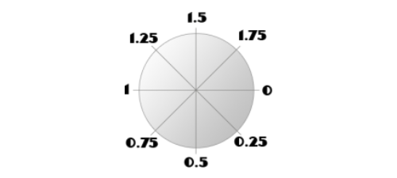
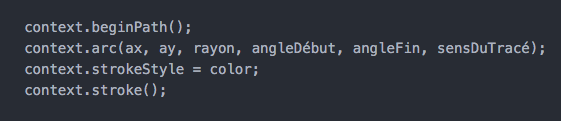
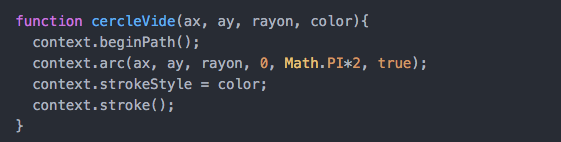
Aller plus loin(vers l'infini et au-delà!)
Canvas est capable de gérer plus que de simples tracés de formes, il gère également les images, le texte, des effets comme le dégradé et est capable de modifier son point d’origine 0.
Les images
Avant de dessiner une image, il est tout d’abord nécessaire de la récupérer. Une fois celle-ci chargée par canvas, on pourra alors lui demander de l’afficher sur notre feuille.
new Image() indique à JavaScript que nous créons un nouvel objet de type image.
image.src nous permet de récupérer une image à l’aide de son url.
image.onload correspond à la fonction a effectuer une fois l’image chargée.
context.drawImage() est la fonction permettant de dessiner ou afficher l’image dans canvas.
Le couple (x, y) fait référence aux coordonnées du coin supérieur gauche où l’on souhaite dessiner l’image.
Le texte
Pour faire du texte avec canvas, il n’est pas nécessaire de tracer soit même ses lettres, trait par trait, lettre par lettre…
Heureusement, canvas a tout prévu et il existe deux fonctions capables de dessiner du texte:
fillText produira des lettres pleines (dont la couleur sera celle de fillStyle).
strokeText produira uniquement le contour des lettres (dont la couleur sera celle définie au préalable par strokeStyle).
Le couple (x, y) fait référence aux coordonnées du coin supérieur gauche où l’on souhaite dessiner l’image.
Il existe également plusieurs propriétés (très proches du CSS) permettant de choisir sa police, la taille de police, l’alignement...
font : police, avec une syntaxe semblable à celle rencontrée en CSS
textAlign : alignement horizontal
baseline : ligne de base (alignement vertical)
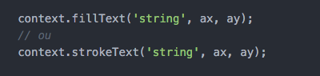
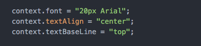
Le dégradé
Il est possible de réaliser 2 types de dégradés, en ligne ou en cercle. Nous nous intéresserons principalement au dégradé linéaire dans cette partie.
Pour ce faire, il est essentiel de définir une couleur de départ et une d’arrivée. L’instruction ne fonctionnera pas avec moins de 2 couleurs. Pour cela, nous utilisons la méthode addColorStop(p, couleur), p étant la position de la couleur dans le dégradé.
A noter que la position se situe entre 0(début) à 1(fin). Notre p devra donc être inclut dans cette tranche.
Il est bien évidemment possible d’ajouter autant de couleur que souhaité.
Avec createLinearGradient(ax, ay, bx, by) on définit l’origine et la fin du dégradé et donc son axe.
Ainsi (0, 0, 300, 300) donnerait un dégradé en diagonale et (0, 0, 300, 0) donnerait un dégradé horizontal, tout deux, sur la moitié de notre canvas de 600px par 300px.
On utilise ensuite context.fillStyle = linear pour définir le style des formes pleines(fill) en y affectant le dégradé crée dans les instructions précédentes.
Enfin, context.fillRect dessine notre rectangle aux couleurs de notre dégradé.
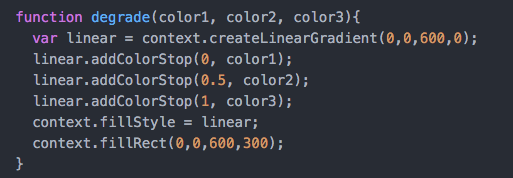
Modifier le point d'origine (0, 0)
En canvas, il est possible de changer le point d’origine (x = 0 et y = 0 par défaut) à l’aide des fonctions translate() et rotate(). Pour ce faire, il est important d’étudier en premier lieu, les fonctions save() et restore().
Sauvegarde et restauration du point d'origine
La méthode save() a pour intérêt de sauvegarder les styles et le context que nous avons définit dans notre canvas.
restore() permet ainsi de revenir à la dernière sauvegarde effectuée
Par exemple, si vous décidez de modifier votre point d’origine (0, 0), avec la commande translate(), sans avoir sauvegarder (save()) au préalable, vous devrez réutiliser translate() pour le remettre à l’origine. Cela peut devenir très embêtant, notamment lorsque l’on a effectué de nombreux déplacements et rotations.
Entrons maintenant dans le vif du sujet.
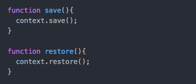
La méthode translate
translate() permet de modifier les coordonnées x et y par défaut de notre canvas. Ainsi, notre point d’origine ne sera plus le point (0,0) mais celui choisi par nos soins.
Rappel: pour plus de simplicité, n’oublier pas d’utiliser save() et ainsi conserver une sauvegarde de votre canvas d’origine ;).
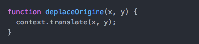
La méthode rotate
rotate(), quant à elle, permet de modifier l’angle par défaut des axes de notre canvas. L’angle est indiqué par défaut en radiant, mais la conversion est possible avec un simple calcul: (angle * (Math.PI / 180)).
On utilise donc context.rotate(angle *(Math.PI/180) pour définir nos nouveaux axes de tracé.
Rappel: pour plus de simplicité, n’oublier pas d’utiliser save() et ainsi conserver une sauvegarde de votre canvas d’origine ;).
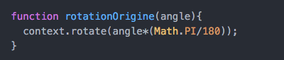
A présent vous êtes fin prêt pour pratiquer sur le canvas !


 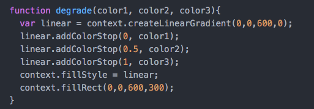
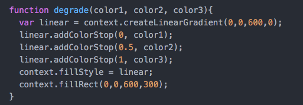